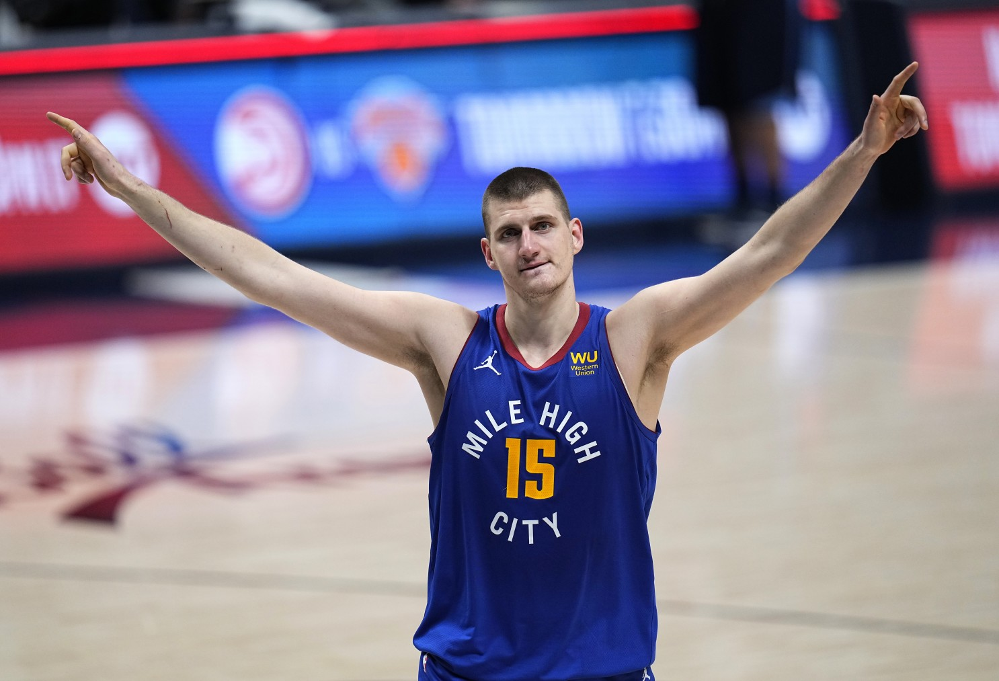

Nikola Jokic is a Serbian professional basketball player for the Denver Nuggets of the National Basketball Association (NBA) who plays the center position. He was born on February 19, 1995. Jokic played in Serbian Basketball League until 2014, when he was drafted as a 41st overall pick. Nobody thought back then that he was going to achieve all the success and earn an MVP award in 2020/21 season. He was voted to the NBA All-Rookie First Team in 2016. In the 2018–19 NBA season, while leading the Nuggets to the Western Conference Semifinals, he received his first All-Star and All-NBA First Team selections. In the following season, he once again received All-Star and All-NBA honors, while leading his team to the Western Conference Finals. Jokić ranks among the top 10 on the all-time list of the NBA players with the most triple-doubles, where he is the leading European player, and he holds the record for fastest triple-double (achieved in 14 minutes and 33 seconds). Through the 2020–21 season, Jokić's career averages are 18.5 points, 9.8 rebounds, and 6.0 assists per game. Currently, in 2021/22 season, he is averaging 26.5 points, 13.8 rebounds, and 7.3 assists.